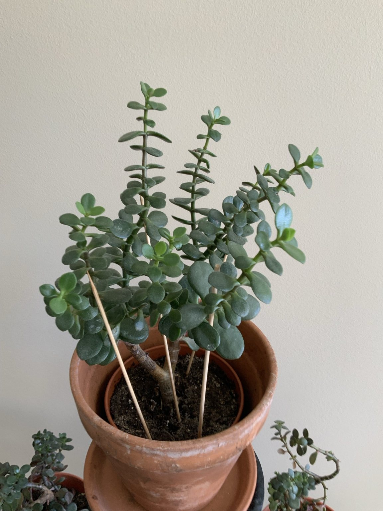
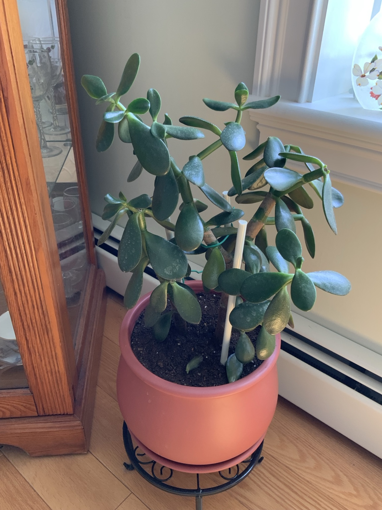
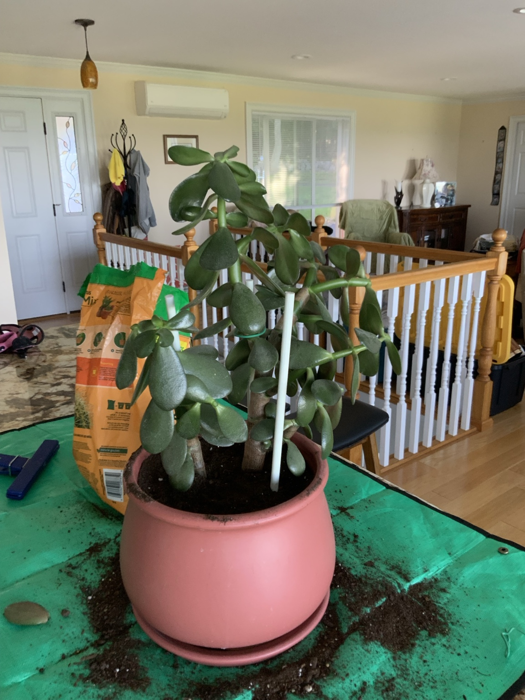
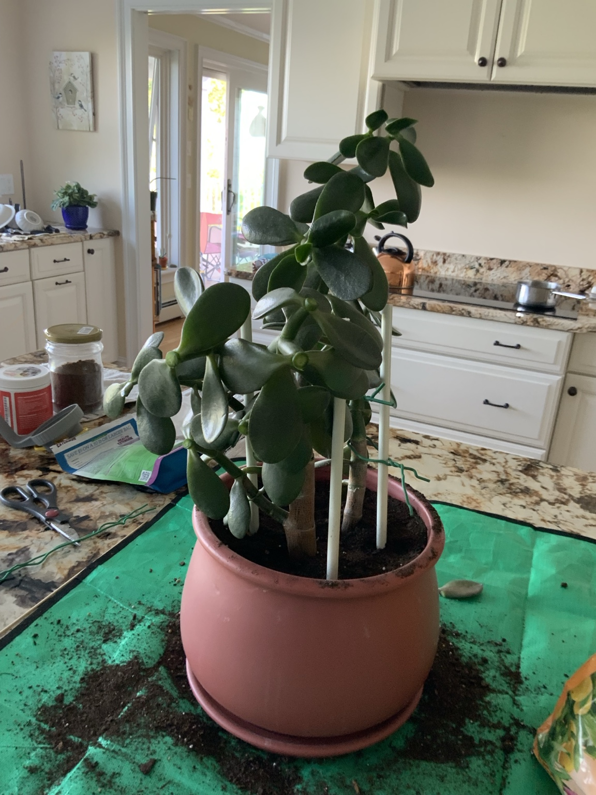
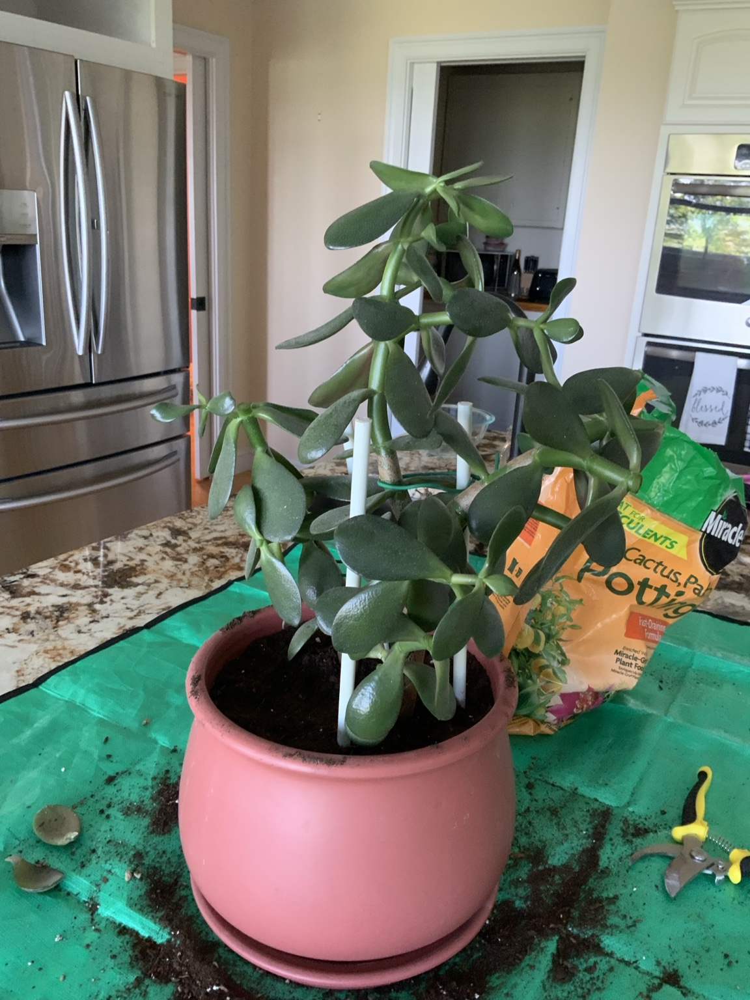
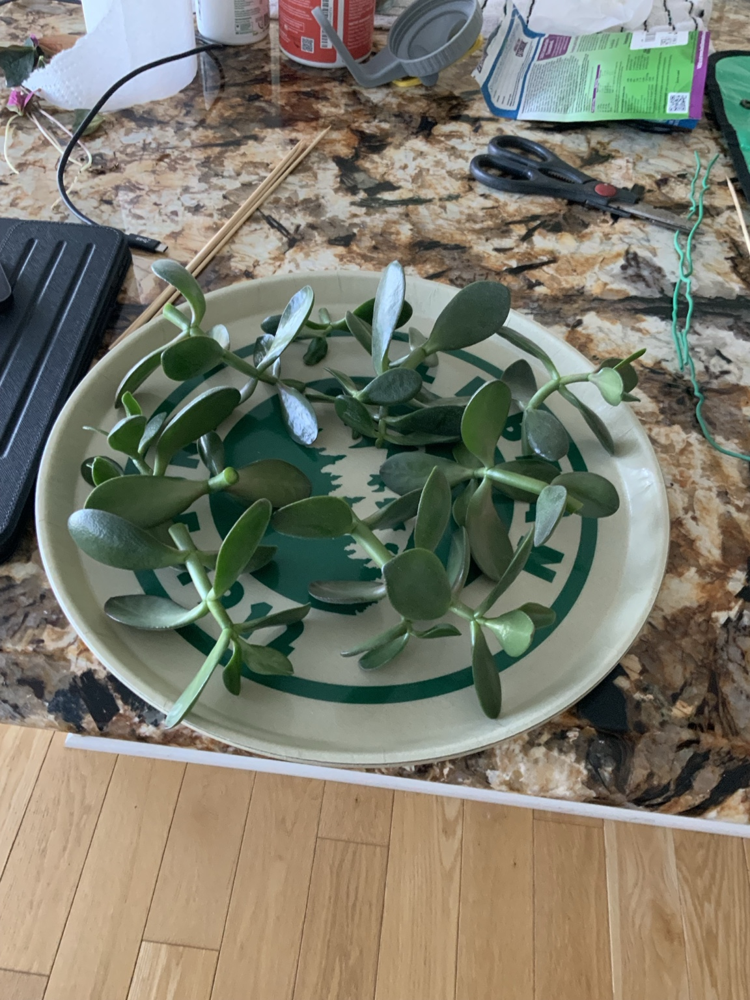

Mother plant
Water deeply only after the mix has dried well. Continue monthly photographs to document new branching.
A living family story, the June 29 pruning, and the 2026 propagation project.
Lou’s mother cared for the original jade plant and later passed the plant itself to Lou’s sister-in-law, Augie.
Augie shared a cutting with her daughter.
Augie’s daughter later shared a cutting with Lou’s sister, Sue.
Sue gave Lou a cutting, which grew into the mother plant shown in this project.
This plant is more than a houseplant—it is a living connection across generations. New plants propagated from it will continue that tradition by being shared with family, friends, and the local community.
The mature mother jade was pruned to improve balance, reduce top-heavy growth, and encourage new branching. Healthy stems and leaves removed during pruning were saved for propagation.






The cuttings were allowed to callus before planting. Pups and cuttings were then placed in a fast-draining cactus or succulent mix. Rooting compound was not required. The newly planted pieces should remain on the dry side while roots begin forming.
Water deeply only after the mix has dried well. Continue monthly photographs to document new branching.
Use bright indirect light at first. Avoid frequent watering; unrooted jade pieces rot more easily than they dry out.
Once established, the new jade plants can be shared with family, friends, and neighbors, continuing the plant’s family history.